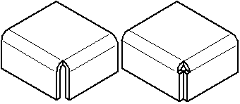

Close 2-Bend Corner command
Use the Close 2-Bend Corner command to close the corner where two flanges meet and creates the smallest gap permissible without joining the corner. Flange edges can equally meet, overlap, totally intersect, or intersect with circular corner relief.

You can specify whether you want to close (A) or overlap (B) the corners.

You cannot directly move of rotate a bend corner. However, you can move or rotate the bend corner by repositioning the adjacent flanges that form the corner. If a plate that contributes to the closed corner is deleted, the bend faces created by the closed corner are deleted and the closed corner definition is removed from the model.
You can select a closed corner for deletion, either in PathFinder or in the graphics window. When you delete a closed corner, the corner definition is removed from the model and bends return to the default bend state.
How do I
Close the corner where two flanges meetEdit a closed 2–bend corner
Learn more
Closing cornersLook up more details
Close 2-Bend Corner command barClose 2-Bend Corner command bar